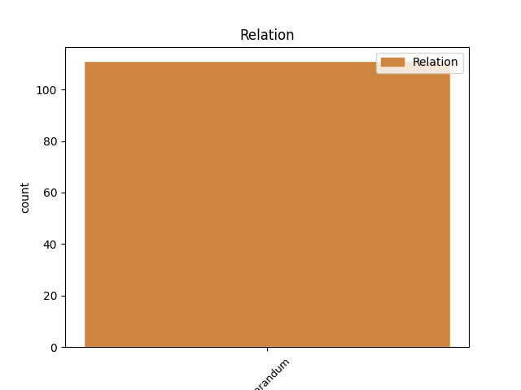
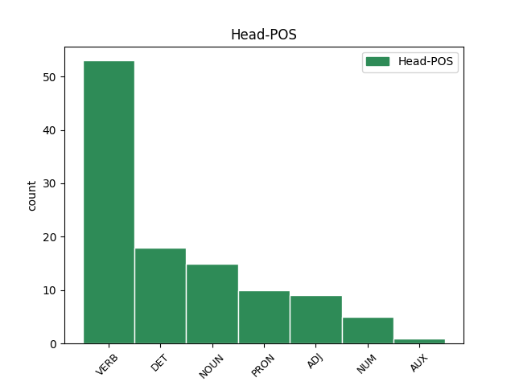
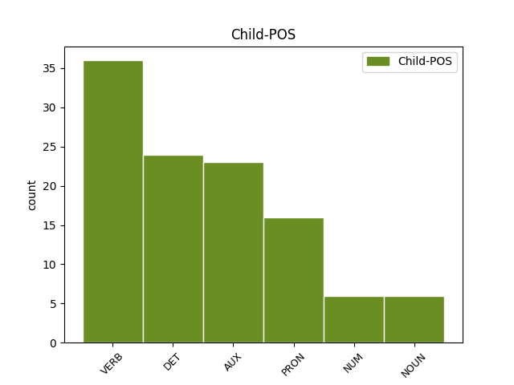

Distribution of features within this leaf



Agreement Rules sorted by frequency.
- When the dependent token is the overridden disfluency(reparandum) of the head token, and the dependent token is VERB.
1 aha _ _ _ _ 0 _ _ _
2 kul _ _ _ _ 0 _ _ _
3 eee _ _ _ _ 0 _ _ _
4 čakaj _ _ _ _ 0 _ _ _
5 še _ _ _ _ 0 _ _ _
6 kako _ _ _ _ 0 _ _ _
7 vprašanje _ _ _ _ 0 _ _ _
8 eee _ _ _ _ 0 _ _ _
9 to _ _ _ _ 0 _ _ _
10 pa _ _ _ _ 0 _ _ _
11 eee _ _ _ _ 0 _ _ _
12 če _ _ _ _ 0 _ _ _
13 če _ _ _ _ 0 _ _ _
14 nabavim _ _ _ _ 0 _ _ _
15 to _ _ _ _ 0 _ _ _
16 imate _ _ _ _ 0 _ _ _
17 k _ _ _ _ 0 _ _ _
18 [gap] _ _ _ _ 0 _ _ _
19 kako _ _ _ _ 0 _ _ _
20 je _ _ _ _ 0 _ _ _
21 tako _ _ _ _ 0 _ _ _
22 zdaj _ _ _ _ 0 _ _ _
23 ena _ _ _ _ 0 _ _ _
24 cena _ _ _ _ 0 _ _ _
25 za _ _ _ _ 0 _ _ _
26 en _ _ _ _ 0 _ _ _
27 mesec _ _ _ _ 0 _ _ _
28 če _ _ _ _ 0 _ _ _
29 bi _ _ _ _ 0 _ _ _
30 jaz _ _ _ _ 0 _ _ _
31 to _ _ _ _ 0 _ _ _
32 hotel hoteti VERB Vmpp-sm Aspect=Imp|Gender=Masc|Number=Sing|VerbForm=Part 36 reparandum _ msd=Ggnd-em|word=hotu
33 pač _ _ _ _ 0 _ _ _
34 en _ _ _ _ 0 _ _ _
35 mesec _ _ _ _ 0 _ _ _
36 hotel hoteti VERB Vmpp-sm Aspect=Imp|Gender=Masc|Number=Sing|VerbForm=Part 0 _ _ _
37 to _ _ _ _ 0 _ _ _
38 jest _ _ _ _ 0 _ _ _
39 ? _ _ _ _ 0 _ _ _
1 se _ _ _ _ 0 _ _ _
2 ni biti AUX Va-r3s-y Mood=Ind|Number=Sing|Person=3|Polarity=Neg|Tense=Pres|VerbForm=Fin 7 reparandum _ msd=Gp-ste-d|word=ni
3 se _ _ _ _ 0 _ _ _
4 ni _ _ _ _ 0 _ _ _
5 nič _ _ _ _ 0 _ _ _
6 na _ _ _ _ 0 _ _ _
7 premaknilo premakniti VERB Vmep-sn Aspect=Perf|Gender=Neut|Number=Sing|VerbForm=Part 0 _ _ _
8 ne _ _ _ _ 0 _ _ _
9 na _ _ _ _ 0 _ _ _
10 drugo _ _ _ _ 0 _ _ _
11 stran _ _ _ _ 0 _ _ _
1 ja _ _ _ _ 0 _ _ _
2 to ta DET Pd-nsn Case=Nom|Gender=Neut|Number=Sing|PronType=Dem 3 reparandum _ msd=Zk-sei|word=to
3 to ta DET Pd-nsn Case=Nom|Gender=Neut|Number=Sing|PronType=Dem 0 _ _ _
4 pa _ _ _ _ 0 _ _ _
5 res _ _ _ _ 0 _ _ _
6 ja _ _ _ _ 0 _ _ _
1 potem _ _ _ _ 0 _ _ _
2 mi jaz PRON Pp1mpn Case=Nom|Gender=Masc|Number=Plur|Person=1|PronType=Prs 8 reparandum _ msd=Zopmmi|word=mi
3 pa _ _ _ _ 0 _ _ _
4 potem _ _ _ _ 0 _ _ _
5 mi _ _ _ _ 0 _ _ _
6 boste _ _ _ _ 0 _ _ _
7 pa _ _ _ _ 0 _ _ _
8 pripravili pripraviti VERB Vmep-pm Aspect=Perf|Gender=Masc|Number=Plur|VerbForm=Part 0 _ _ _
9 na _ _ _ _ 0 _ _ _
10 strani _ _ _ _ 0 _ _ _
11 in _ _ _ _ 0 _ _ _
12 pol _ _ _ _ 0 _ _ _
13 vaš _ _ _ _ 0 _ _ _
14 komentar _ _ _ _ 0 _ _ _
1 eee _ _ _ _ 0 _ _ _
2 to _ _ _ _ 0 _ _ _
3 je _ _ _ _ 0 _ _ _
4 eem _ _ _ _ 0 _ _ _
5 eee _ _ _ _ 0 _ _ _
6 rastlina _ _ _ _ 0 _ _ _
7 oddaja _ _ _ _ 0 _ _ _
8 kisik kisik NOUN Ncmsan Animacy=Inan|Case=Acc|Gender=Masc|Number=Sing 15 reparandum _ msd=Sometn|word=kisik
9 ki _ _ _ _ 0 _ _ _
10 ga _ _ _ _ 0 _ _ _
11 j _ _ _ _ 0 _ _ _
12 [gap] _ _ _ _ 0 _ _ _
13 eee _ _ _ _ 0 _ _ _
14 ogljikov _ _ _ _ 0 _ _ _
15 dioksid dioksid NOUN Ncmsan Animacy=Inan|Case=Acc|Gender=Masc|Number=Sing 0 _ _ _
16 ki _ _ _ _ 0 _ _ _
17 ga _ _ _ _ 0 _ _ _
18 ne _ _ _ _ 0 _ _ _
19 potrebuje _ _ _ _ 0 _ _ _
1 eee _ _ _ _ 0 _ _ _
2 ali _ _ _ _ 0 _ _ _
3 ni _ _ _ _ 0 _ _ _
4 [:voice] _ _ _ _ 0 _ _ _
5 … _ _ _ _ 0 _ _ _
6 ne _ _ _ _ 0 _ _ _
7 vem _ _ _ _ 0 _ _ _
8 v _ _ _ _ 0 _ _ _
9 čemu _ _ _ _ 0 _ _ _
10 ali _ _ _ _ 0 _ _ _
11 [name:personal] _ _ _ _ 0 _ _ _
12 [name:personal] _ _ _ _ 0 _ _ _
13 eee _ _ _ _ 0 _ _ _
14 dajmo _ _ _ _ 0 _ _ _
15 glej _ _ _ _ 0 _ _ _
16 eee _ _ _ _ 0 _ _ _
17 ali _ _ _ _ 0 _ _ _
18 ni _ _ _ _ 0 _ _ _
19 a _ _ _ _ 0 _ _ _
20 ni _ _ _ _ 0 _ _ _
21 to _ _ _ _ 0 _ _ _
22 žaljivo _ _ _ _ 0 _ _ _
23 do _ _ _ _ 0 _ _ _
24 lepote _ _ _ _ 0 _ _ _
25 ene _ _ _ _ 0 _ _ _
26 ene _ _ _ _ 0 _ _ _
27 ene en NUM Mlpfsg Case=Gen|Gender=Fem|Number=Sing|NumForm=Word|NumType=Card 28 reparandum _ msd=Kbzzer|word=ene
28 ene en NUM Mlpfsg Case=Gen|Gender=Fem|Number=Sing|NumForm=Word|NumType=Card 0 _ _ _
29 [incident] _ _ _ _ 0 _ _ _
30 čke _ _ _ _ 0 _ _ _
31 recimo _ _ _ _ 0 _ _ _
32 eee _ _ _ _ 0 _ _ _
33 glej _ _ _ _ 0 _ _ _
34 kot _ _ _ _ 0 _ _ _
35 a _ _ _ _ 0 _ _ _
36 je _ _ _ _ 0 _ _ _
37 to _ _ _ _ 0 _ _ _
38 [incident] _ _ _ _ 0 _ _ _
39 čka _ _ _ _ 0 _ _ _
40 kot _ _ _ _ 0 _ _ _
41 oseba _ _ _ _ 0 _ _ _
42 ženskega _ _ _ _ 0 _ _ _
43 spola _ _ _ _ 0 _ _ _
44 ali _ _ _ _ 0 _ _ _
45 je _ _ _ _ 0 _ _ _
46 [incident] _ _ _ _ 0 _ _ _
47 čka _ _ _ _ 0 _ _ _
48 kot _ _ _ _ 0 _ _ _
49 spolni _ _ _ _ 0 _ _ _
50 organ _ _ _ _ 0 _ _ _
51 a _ _ _ _ 0 _ _ _
52 veš _ _ _ _ 0 _ _ _
53 to _ _ _ _ 0 _ _ _
54 je _ _ _ _ 0 _ _ _
55 mislim _ _ _ _ 0 _ _ _
56 ne _ _ _ _ 0 _ _ _
57 u _ _ _ _ 0 _ _ _
58 [gap] _ _ _ _ 0 _ _ _
59 u _ _ _ _ 0 _ _ _
60 [gap] _ _ _ _ 0 _ _ _
61 … _ _ _ _ 0 _ _ _
62 tudi _ _ _ _ 0 _ _ _
Disagree Examples:
1 no _ _ _ _ 0 _ _ _
2 in _ _ _ _ 0 _ _ _
3 potem _ _ _ _ 0 _ _ _
4 so biti AUX Va-r3p-n Mood=Ind|Number=Plur|Person=3|Polarity=Pos|Tense=Pres|VerbForm=Fin 14 reparandum _ msd=Gp-stm-n|word=so
5 eee _ _ _ _ 0 _ _ _
6 na _ _ _ _ 0 _ _ _
7 kranjski _ _ _ _ 0 _ _ _
8 koči _ _ _ _ 0 _ _ _
9 na _ _ _ _ 0 _ _ _
10 ledinah _ _ _ _ 0 _ _ _
11 jim _ _ _ _ 0 _ _ _
12 je _ _ _ _ 0 _ _ _
13 ravnokar _ _ _ _ 0 _ _ _
14 odpovedala odpovedati VERB Vmep-sf Aspect=Perf|Gender=Fem|Number=Sing|VerbForm=Part 0 _ _ _
15 oskrbnica _ _ _ _ 0 _ _ _
16 in _ _ _ _ 0 _ _ _
17 sem _ _ _ _ 0 _ _ _
18 pri _ _ _ _ 0 _ _ _
19 devetnajstih _ _ _ _ 0 _ _ _
20 letih _ _ _ _ 0 _ _ _
21 ljubljančanka _ _ _ _ 0 _ _ _
22 z _ _ _ _ 0 _ _ _
23 ruzakom _ _ _ _ 0 _ _ _
24 prišla _ _ _ _ 0 _ _ _
25 gor _ _ _ _ 0 _ _ _
26 in _ _ _ _ 0 _ _ _
27 sem _ _ _ _ 0 _ _ _
28 bila _ _ _ _ 0 _ _ _
29 kar _ _ _ _ 0 _ _ _
30 naenkrat _ _ _ _ 0 _ _ _
31 en _ _ _ _ 0 _ _ _
32 mesec _ _ _ _ 0 _ _ _
33 pa _ _ _ _ 0 _ _ _
34 pol _ _ _ _ 0 _ _ _
35 tam _ _ _ _ 0 _ _ _
36 oskrbnica _ _ _ _ 0 _ _ _
1 tu _ _ _ _ 0 _ _ _
2 sicer _ _ _ _ 0 _ _ _
3 te ta DET Pd-fpn Case=Nom|Gender=Fem|Number=Plur|PronType=Dem 4 reparandum _ msd=Zk-zmi|word=te
4 ta ta DET Pd-fsn Case=Nom|Gender=Fem|Number=Sing|PronType=Dem 0 _ _ _
5 prelomnica _ _ _ _ 0 _ _ _
6 še _ _ _ _ 0 _ _ _
7 dokaj _ _ _ _ 0 _ _ _
8 pred _ _ _ _ 0 _ _ _
9 prelomnico _ _ _ _ 0 _ _ _
10 dokaj _ _ _ _ 0 _ _ _
11 normalno _ _ _ _ 0 _ _ _
12 potem _ _ _ _ 0 _ _ _
13 pa _ _ _ _ 0 _ _ _
14 smer _ _ _ _ 0 _ _ _
15 smučarke _ _ _ _ 0 _ _ _
16 predvsem _ _ _ _ 0 _ _ _
17 smuči _ _ _ _ 0 _ _ _
18 je _ _ _ _ 0 _ _ _
19 bila _ _ _ _ 0 _ _ _
20 povsem _ _ _ _ 0 _ _ _
21 napačna _ _ _ _ 0 _ _ _
1 no _ _ _ _ 0 _ _ _
2 dobro _ _ _ _ 0 _ _ _
3 midve jaz PRON Pp1fdn Case=Nom|Gender=Fem|Number=Dual|Person=1|PronType=Prs 10 reparandum _ msd=Zopzdi|word=midve
4 eee _ _ _ _ 0 _ _ _
5 se _ _ _ _ 0 _ _ _
6 pravi _ _ _ _ 0 _ _ _
7 mmm _ _ _ _ 0 _ _ _
8 predvidoma _ _ _ _ 0 _ _ _
9 je _ _ _ _ 0 _ _ _
10 cilj cilj NOUN Ncmsn Case=Nom|Gender=Masc|Number=Sing 0 _ _ _
11 je _ _ _ _ 0 _ _ _
12 delujoč _ _ _ _ 0 _ _ _
1 eee _ _ _ _ 0 _ _ _
2 teh ta DET Pd-fpg Case=Gen|Gender=Fem|Number=Plur|PronType=Dem 4 reparandum _ msd=Zk-zmr|word=peh
3 eee _ _ _ _ 0 _ _ _
4 to ta DET Pd-nsn Case=Nom|Gender=Neut|Number=Sing|PronType=Dem 0 _ _ _
5 je _ _ _ _ 0 _ _ _
6 v _ _ _ _ 0 _ _ _
7 bistvu _ _ _ _ 0 _ _ _
8 najbolj _ _ _ _ 0 _ _ _
9 bom _ _ _ _ 0 _ _ _
10 rekel _ _ _ _ 0 _ _ _
11 prijazna _ _ _ _ 0 _ _ _
12 kar _ _ _ _ 0 _ _ _
13 se _ _ _ _ 0 _ _ _
14 tiče _ _ _ _ 0 _ _ _
15 kolesarja _ _ _ _ 0 _ _ _
16 za _ _ _ _ 0 _ _ _
17 vzdrževanje _ _ _ _ 0 _ _ _
18 ker _ _ _ _ 0 _ _ _
19 ni _ _ _ _ 0 _ _ _
20 nobenih _ _ _ _ 0 _ _ _
21 olja _ _ _ _ 0 _ _ _
22 ni _ _ _ _ 0 _ _ _
23 nobenega _ _ _ _ 0 _ _ _
24 zračnih _ _ _ _ 0 _ _ _
25 komor _ _ _ _ 0 _ _ _
26 notri _ _ _ _ 0 _ _ _
27 tako _ _ _ _ 0 _ _ _
28 da _ _ _ _ 0 _ _ _
29 v _ _ _ _ 0 _ _ _
30 bistvu _ _ _ _ 0 _ _ _
31 taka _ _ _ _ 0 _ _ _
32 vilica _ _ _ _ 0 _ _ _
33 potem _ _ _ _ 0 _ _ _
34 če _ _ _ _ 0 _ _ _
35 se _ _ _ _ 0 _ _ _
36 enkrat _ _ _ _ 0 _ _ _
37 na _ _ _ _ 0 _ _ _
38 leto _ _ _ _ 0 _ _ _
39 pogleda _ _ _ _ 0 _ _ _
40 na _ _ _ _ 0 _ _ _
41 servisu _ _ _ _ 0 _ _ _
42 se _ _ _ _ 0 _ _ _
43 tile _ _ _ _ 0 _ _ _
44 vodila _ _ _ _ 0 _ _ _
45 namažejo _ _ _ _ 0 _ _ _
46 se _ _ _ _ 0 _ _ _
47 prah _ _ _ _ 0 _ _ _
48 obriše _ _ _ _ 0 _ _ _
49 se _ _ _ _ 0 _ _ _
50 te _ _ _ _ 0 _ _ _
51 zadeve _ _ _ _ 0 _ _ _
52 pogleda _ _ _ _ 0 _ _ _
53 pa _ _ _ _ 0 _ _ _
54 je _ _ _ _ 0 _ _ _
55 to _ _ _ _ 0 _ _ _
56 to _ _ _ _ 0 _ _ _
1 pa _ _ _ _ 0 _ _ _
2 lani _ _ _ _ 0 _ _ _
3 so biti AUX Va-r3p-n Mood=Ind|Number=Plur|Person=3|Polarity=Pos|Tense=Pres|VerbForm=Fin 5 reparandum _ msd=Gp-stm-n|word=so
4 lani _ _ _ _ 0 _ _ _
5 bilo biti VERB Va-p-sn Gender=Neut|Number=Sing|VerbForm=Part 0 _ _ _
6 samo _ _ _ _ 0 _ _ _
7 en _ _ _ _ 0 _ _ _
8 dan _ _ _ _ 0 _ _ _
9 ampak _ _ _ _ 0 _ _ _
10 to _ _ _ _ 0 _ _ _
11 izjemoma _ _ _ _ 0 _ _ _
12 ne _ _ _ _ 0 _ _ _
13 … _ _ _ _ 0 _ _ _
14 mhm _ _ _ _ 0 _ _ _